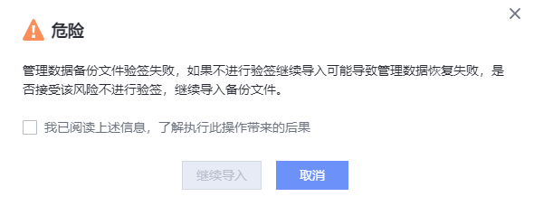

通过导入管理数据备份操作，将本地保存的原系统管理数据备份导入到系统中，覆盖系统管理数据。
注意事项
- 导入的备份数据不能超过4GB。
- 恢复管理数据备份时，不允许开启SFTP服务，请等待恢复完成后再开启。
- SFTP服务开启过程中不能执行数据恢复操作，请等待开启完成后操作。
- 不支持导入SFTP服务开启前的管理数据。
- 导入管理数据备份后，系统将会自动执行一次恢复任务，具体影响请参考注意事项。
- OceanProtect支持在正常运行状态下导入管理数据。
- 1.6.0及后续版本支持在重新部署OceanProtect后导入管理数据。
操作步骤
- 在导航栏上，选择“系统 > 设置 > 管理数据备份”。
- 单击“导入备份”。
设置导入备份参数，相关参数如表1所示。
- 单击“确定”。系统弹出如下提示，确认提示内容后，单击“确定”。

相关操作
重新安装OceanProtect，支持导入原管理数据备份文件。
- 在导航栏上，选择“系统 > 设置 > 管理数据备份”。
- 单击“导入备份”。
设置导入备份参数，相关参数如表2所示。
- 单击“确定”。系统弹出如下提示，确认提示内容后，单击“确定”。
- 系统弹出如下提示，确认提示内容后，单击“继续导入”。
